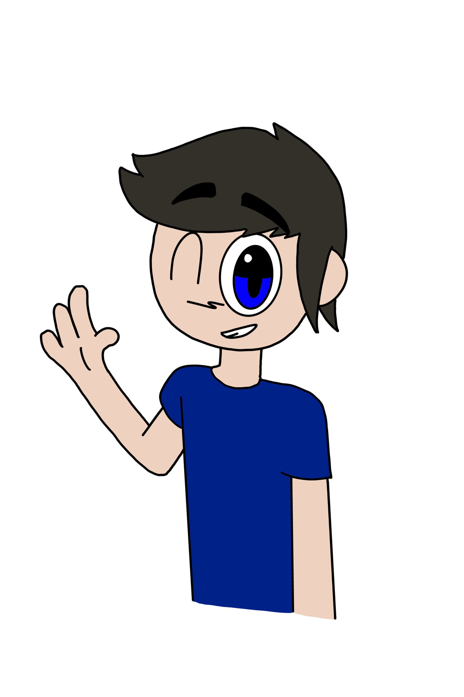

Who is KineticTOONZ?
Luke Hendrix (not his real name, but he prefers to also be called that), also known as KineticTOONZ, is an independent Singaporean multi-content creator born in 2009. He produces animations, digital artwork, and music.
His work often features a colorful cartoon style and original characters. As KineticTOONZ, he continues to expand his creative projects while sharing them with an online audience.
What he likes:
Animating, family, friends, YouTube friends, Dandy’s World, Friday Night Funkin’, and all of the good things.
What he dislikes:
People forcing him to do their requests, griefing in Roblox, people who think he’s weird for what he likes, and people stealing videos from other YouTubers and claiming them as their own.
Fun Fact:
Creeper and Slime are his two favourite monsters in Minecraft. Among his comfort media are the animated series Monster School and the song “Join Us For A Bite.”